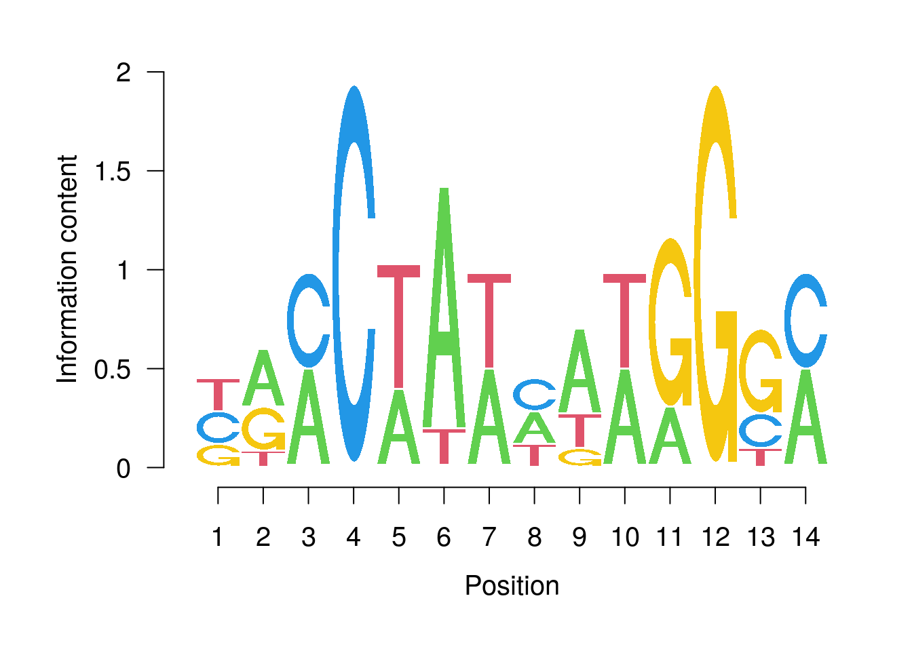

Last updated: 2023-06-28
Checks: 7 0
Knit directory: muse/
This reproducible R Markdown analysis was created with workflowr (version 1.7.0). The Checks tab describes the reproducibility checks that were applied when the results were created. The Past versions tab lists the development history.
Great! Since the R Markdown file has been committed to the Git repository, you know the exact version of the code that produced these results.
Great job! The global environment was empty. Objects defined in the global environment can affect the analysis in your R Markdown file in unknown ways. For reproduciblity it’s best to always run the code in an empty environment.
The command set.seed(20200712) was run prior to running
the code in the R Markdown file. Setting a seed ensures that any results
that rely on randomness, e.g. subsampling or permutations, are
reproducible.
Great job! Recording the operating system, R version, and package versions is critical for reproducibility.
Nice! There were no cached chunks for this analysis, so you can be confident that you successfully produced the results during this run.
Great job! Using relative paths to the files within your workflowr project makes it easier to run your code on other machines.
Great! You are using Git for version control. Tracking code development and connecting the code version to the results is critical for reproducibility.
The results in this page were generated with repository version d944430. See the Past versions tab to see a history of the changes made to the R Markdown and HTML files.
Note that you need to be careful to ensure that all relevant files for
the analysis have been committed to Git prior to generating the results
(you can use wflow_publish or
wflow_git_commit). workflowr only checks the R Markdown
file, but you know if there are other scripts or data files that it
depends on. Below is the status of the Git repository when the results
were generated:
Ignored files:
Ignored: .Rhistory
Ignored: .Rproj.user/
Ignored: r_packages_4.1.2/
Ignored: r_packages_4.2.0/
Ignored: r_packages_4.2.2/
Ignored: r_packages_4.3.0/
Untracked files:
Untracked: analysis/cell_ranger.Rmd
Untracked: analysis/tss_xgboost.Rmd
Untracked: code/multiz100way/
Untracked: data/HG00702_SH089_CHSTrio.chr1.vcf.gz
Untracked: data/HG00702_SH089_CHSTrio.chr1.vcf.gz.tbi
Untracked: data/ncrna_NONCODE[v3.0].fasta.tar.gz
Untracked: data/ncrna_noncode_v3.fa
Untracked: data/netmhciipan.out.gz
Untracked: women.json
Unstaged changes:
Modified: analysis/graph.Rmd
Note that any generated files, e.g. HTML, png, CSS, etc., are not included in this status report because it is ok for generated content to have uncommitted changes.
These are the previous versions of the repository in which changes were
made to the R Markdown (analysis/pwm.Rmd) and HTML
(docs/pwm.html) files. If you’ve configured a remote Git
repository (see ?wflow_git_remote), click on the hyperlinks
in the table below to view the files as they were in that past version.
| File | Version | Author | Date | Message |
|---|---|---|---|---|
| Rmd | d944430 | Dave Tang | 2023-06-28 | Position weight matrix |
The process of transcription, is influenced by the interaction of proteins called transcription factors (TFs) that bind to specific sites called Transcription Factor Binding Sites (TFBSs), which are proximal or distal to a transcription starting site. TFs generally have distinct binding preferences towards specific TFBSs, however TFs can tolerate variations in the target TFBS. Thus to model a TFBS, the nucleotides are weighted accordingly, to the tolerance of the TF. One common way to represent this is by using a Position Weight Matrix (PWM), also called position-specific weight matrix (PSWM) or position-specific scoring matrix (PSSM), which is a commonly used representation of motifs (in our case TFBS) in biological sequences.
How do we find TFBSs? DNA sequences that interact with TFs can be experimentally determined from SELEX experiments. Since this process involves synthesis of a large number of randomly generated oligonucleotides, DNA sequences that interact with TFs can be determined, as well as the tolerance at specific sites. From SELEX experiments, a position frequency matrix (PFM) can be constructed by recording the position-dependent frequency of each nucleotide in the DNA sequence that interacted with the TF. Here’s an example of a PFM as shown in this review “Applied bioinformatics for the identification of regulatory elements” (sorry paywall!):
| nuc | 1 | 2 | 3 | 4 | 5 | 6 | 7 | 8 | 9 | 10 | 11 | 12 | 13 | 14 |
|---|---|---|---|---|---|---|---|---|---|---|---|---|---|---|
| A | 0 | 4 | 4 | 0 | 3 | 7 | 4 | 3 | 5 | 4 | 2 | 0 | 0 | 4 |
| C | 3 | 0 | 4 | 8 | 0 | 0 | 0 | 3 | 0 | 0 | 0 | 0 | 2 | 2 |
| G | 2 | 3 | 0 | 0 | 0 | 0 | 0 | 0 | 1 | 0 | 6 | 8 | 5 | 0 |
| T | 3 | 1 | 0 | 0 | 5 | 1 | 4 | 2 | 2 | 4 | 0 | 0 | 1 | 0 |
The construction of this PFM was done by collecting experimentally validated binding sites from 8 published studies for MEF2.
To convert a PFM to the corresponding PWM, the frequencies are converted to normalised frequency values on a log-scale. To perform this conversion we can use these formulae from the review paper:
\[ W_{b,i} = log_{2}\frac{p(b,i)}{p(b)} \]
where \(W_{b,i}\) = PWM value of base b in position i, \(p(b)\) = background probability of base b and \(p(b,i)\):
\[ p(b,i) = \frac{f_{b,i} + s(b)}{N + \sum s(b')} \]
where \(b' \in \{A, C, G, T\}\); \(f_{b,i}\) = counts of base b in position i; \(N\) = number of sites; \(p(b,i)\) = corrected probability of base b in position i and \(s(b)\) = pseudocount function.
The pseudocount is a sample correction that is added when assessing the probability to correct for small samples sizes and this calculation varies widely between applications. One approach is to take the square root of the number of sites that contribute to the model, which was apparently the approach used in the paper. However, when I used this as the pseudocount function, I could not replicate the numbers in the table of the review (Box 1, d). In fact, if you examine the PWM in the paper (Box 1, d), there’s several typos. For example, in position 1, the frequency of C’s and T’s are identical, however the PWM values are different. Also the PWM for a frequency of 1 is different in position 13, T and all other positions with a frequency of 1. Most other values seem to be consistent though. So in order to find out the pseudocount function, I substituted some of the (consistent) PWM values back into the equation.
Firstly recall the conversion between the logarithmic form to the exponential form:
\[ y = log_{a}x \leftrightarrow a^{y} = x. \]
Therefore:
\[ W_{b,i} = log_{2}\frac{p(b,i)}{p(b)} \leftrightarrow 2^{W_{b,i}} = \frac{p(b,i)}{p(b)} \]
and substituting \(p(b,i)\) in:
\[ 2^{W_{b,i}} \cdot p(b) = \frac{f_{b,i} + s(b)}{N + \sum s(b')} \]
The PWM value for a frequency of 0 seems to be consistent, so let’s take \(W_{A,1}\) and substitute it into the equation:
\[ 2^{-1.93} \cdot p(b) = \frac{0 + s_{A}}{8 + s_{A} + s_{C} + s_{G} + s_{T}}. \]
The PWM value for a frequency of 3 seems to be 0.45, so let’s take \(W_{C,1}\) and substitute it into the equation:
\[ 2^{0.45} \cdot p(b) = \frac{3 + s_{C}}{8 + s_{A} + s_{C} + s_{G} + s_{T}}. \]
We now have two simultaneous equations that we can divide together, i.e. dividing \(W\_{A,1}\) by \(W_{C,1}\) (the denominators cancel each other out), to work out the pseudocount:
\[ \frac{2^{-1.93} \cdot p(b)}{2^{0.45} \cdot p(b)} = \frac{s_{A}}{3 + s_{C}}. \]
The background probabilities cancel each other out and since the pseudocounts should be the same for the different nucleotides, we can refer to them as an s:
\[ \frac{0.2624292}{1.36604} = \frac{s}{3 + s}. \]
\[ 0.1921094 = \frac{s}{3 + s}. \]
Invert the two sides:
\[ 5.205367 = \frac{3 + s}{s} = \frac{3}{s} + \frac{s}{s}. \]
Solving s, we get:
\[ 5.205367 = \frac{3}{s} + 1 \]
\[ 4.205367 = \frac{3}{s} \]
\[ s = \frac{3}{4.205367} = 0.7133741 \]
Perhaps I missed it, but it wasn’t pointed out exactly how \(p(b)\) or the background probability of base b is defined. Since we worked out s, we can substitute it into the equation for \(W_{A,1}\) and work out \(p(b)\):
\[ 2^{-1.93} \cdot p(b) = \frac{0 + 0.71}{8 + 0.71 + 0.71 + 0.71 + 0.71}. \]
\[ p(b) = \frac{0.06572758}{2^{-1.93}} = 0.2504584. \]
So the background probability of base b is simply 0.25, i.e. base b divided by the total number of bases. But where did this 0.71 pseudocount come from? If we take the square root of the number of sites that contribute to the model, the square root of 8 is 2.828427. Perhaps the pseudocount needs to be scaled by base b, since the square root of 8 multiply by 1/4 is 0.7071068.
Since some of the values in the PWM of the review paper is incorrect, let’s calculate it again using the formulae above (since we now know the pseudocount function and the background probability) using R:
calc_pwm <- function(freq, total, bg=0.25){
p <- (freq + (sqrt(total) * 1/4)) / (total + (4 * (sqrt(total) * 1/4)))
log2(p/bg)
}
# work out all possible PWM values
map_dbl(0:8, calc_pwm, total = 8)[1] -1.9367518 -0.6651985 0.0000000 0.4535419 0.7980888 1.0760078 1.3089388
[8] 1.5094376 1.6854416Now let’s calculate the PWM by first defining the matrix.
# define the frequencies of nucleotides
A <- c(0, 4, 4, 0, 3, 7, 4, 3, 5, 4, 2, 0, 0, 4)
C <- c(3, 0, 4, 8, 0, 0, 0, 3, 0, 0, 0, 0, 2, 4)
G <- c(2, 3, 0, 0, 0, 0, 0, 0, 1, 0, 6, 8, 5, 0)
T <- c(3, 1, 0, 0, 5, 1, 4, 2, 2, 4, 0, 0, 1, 0)
M <- matrix(
data = c(A,C,G,T),
nrow = 4,
byrow = TRUE,
dimnames = list(c('A','C','G','T'))
)
M [,1] [,2] [,3] [,4] [,5] [,6] [,7] [,8] [,9] [,10] [,11] [,12] [,13] [,14]
A 0 4 4 0 3 7 4 3 5 4 2 0 0 4
C 3 0 4 8 0 0 0 3 0 0 0 0 2 4
G 2 3 0 0 0 0 0 0 1 0 6 8 5 0
T 3 1 0 0 5 1 4 2 2 4 0 0 1 0Calculate the PWM using our function.
pwm <- calc_pwm(M, 8)
pwm [,1] [,2] [,3] [,4] [,5] [,6] [,7]
A -1.9367518 0.7980888 0.7980888 -1.936752 0.4535419 1.5094376 0.7980888
C 0.4535419 -1.9367518 0.7980888 1.685442 -1.9367518 -1.9367518 -1.9367518
G 0.0000000 0.4535419 -1.9367518 -1.936752 -1.9367518 -1.9367518 -1.9367518
T 0.4535419 -0.6651985 -1.9367518 -1.936752 1.0760078 -0.6651985 0.7980888
[,8] [,9] [,10] [,11] [,12] [,13] [,14]
A 0.4535419 1.0760078 0.7980888 0.000000 -1.936752 -1.9367518 0.7980888
C 0.4535419 -1.9367518 -1.9367518 -1.936752 -1.936752 0.0000000 0.7980888
G -1.9367518 -0.6651985 -1.9367518 1.308939 1.685442 1.0760078 -1.9367518
T 0.0000000 0.0000000 0.7980888 -1.936752 -1.936752 -0.6651985 -1.9367518Now that we have the PWM, we can generate a quantitative score for any DNA sequence (of the same length) by summing the values that correspond to the observed nucleotides at each position. Here we will use the same sequence as shown in the review.
seq <- 'TTACATAAGTAGTC'
seq <- unlist(strsplit(x = seq, split=''))
seq [1] "T" "T" "A" "C" "A" "T" "A" "A" "G" "T" "A" "G" "T" "C"A quantitative score for any DNA sequence can be generated by summing the values that correspond to the observed nucleotide at each position.
seq_score <- map_dbl(1:length(seq), function(x) pwm[seq[x], x])
# slightly different to the review due to rounding
sum(seq_score)[1] 5.26307The maximum score can be calculated by summing all the maximum values of each column.
sum(apply(pwm, 2, max))[1] 14.31481Lastly, we will generate a sequence logo from a PFM. We need the seqLogo package, so install it if you have not already.
if (!require("BiocManager", quietly = TRUE))
install.packages("BiocManager")
if (!require("seqLogo", quietly = TRUE))
BiocManager::install("seqLogo")Create a data frame.
library(seqLogo)
A <- c(0, 4, 4, 0, 3, 7, 4, 3, 5, 4, 2, 0, 0, 4)
C <- c(3, 0, 4, 8, 0, 0, 0, 3, 0, 0, 0, 0, 2, 4)
G <- c(2, 3, 0, 0, 0, 0, 0, 0, 1, 0, 6, 8, 5, 0)
T <- c(3, 1, 0, 0, 5, 1, 4, 2, 2, 4, 0, 0, 1, 0)
my_df <- data.frame(A, C, G, T)
my_df A C G T
1 0 3 2 3
2 4 0 3 1
3 4 4 0 0
4 0 8 0 0
5 3 0 0 5
6 7 0 0 1
7 4 0 0 4
8 3 3 0 2
9 5 0 1 2
10 4 0 0 4
11 2 0 6 0
12 0 0 8 0
13 0 2 5 1
14 4 4 0 0First we divide the frequency by the row sum to get the proportions. We then construct a PWM and then plot a sequence logo. Note that this PWM is calculated in a different manner as our example above but they both show the same information.
mef2 <- apply(my_df, 1, function(x) x / sum(x))
mef2 <- makePWM(mef2)
seqLogo(mef2)
With respect to transcription factors (TFs), a position weight matrix (PWM) can be generated from a position frequency matrix (PFM), which is a collection of experimentally validated binding sites. Using this PWM, any given sequence can be quantitatively scored against the motif model. The PWM models appropriately the tolerance of TFs to binding sites and one can use sequence logos to visualise PFMs.
I’d like to thank my colleague (if he ever comes across this page) for his help.
sessionInfo()R version 4.3.0 (2023-04-21)
Platform: x86_64-pc-linux-gnu (64-bit)
Running under: Ubuntu 22.04.2 LTS
Matrix products: default
BLAS: /usr/lib/x86_64-linux-gnu/openblas-pthread/libblas.so.3
LAPACK: /usr/lib/x86_64-linux-gnu/openblas-pthread/libopenblasp-r0.3.20.so; LAPACK version 3.10.0
locale:
[1] LC_CTYPE=en_US.UTF-8 LC_NUMERIC=C
[3] LC_TIME=en_US.UTF-8 LC_COLLATE=en_US.UTF-8
[5] LC_MONETARY=en_US.UTF-8 LC_MESSAGES=en_US.UTF-8
[7] LC_PAPER=en_US.UTF-8 LC_NAME=C
[9] LC_ADDRESS=C LC_TELEPHONE=C
[11] LC_MEASUREMENT=en_US.UTF-8 LC_IDENTIFICATION=C
time zone: Etc/UTC
tzcode source: system (glibc)
attached base packages:
[1] grid stats graphics grDevices utils datasets methods
[8] base
other attached packages:
[1] seqLogo_1.66.0 BiocManager_1.30.20 lubridate_1.9.2
[4] forcats_1.0.0 stringr_1.5.0 dplyr_1.1.2
[7] purrr_1.0.1 readr_2.1.4 tidyr_1.3.0
[10] tibble_3.2.1 ggplot2_3.4.2 tidyverse_2.0.0
[13] workflowr_1.7.0
loaded via a namespace (and not attached):
[1] sass_0.4.5 utf8_1.2.3 generics_0.1.3 stringi_1.7.12
[5] hms_1.1.3 digest_0.6.31 magrittr_2.0.3 timechange_0.2.0
[9] evaluate_0.20 fastmap_1.1.1 rprojroot_2.0.3 jsonlite_1.8.5
[13] processx_3.8.1 whisker_0.4.1 ps_1.7.5 promises_1.2.0.1
[17] httr_1.4.5 fansi_1.0.4 scales_1.2.1 jquerylib_0.1.4
[21] cli_3.6.1 rlang_1.1.0 munsell_0.5.0 withr_2.5.0
[25] cachem_1.0.7 yaml_2.3.7 tools_4.3.0 tzdb_0.3.0
[29] colorspace_2.1-0 httpuv_1.6.9 vctrs_0.6.2 R6_2.5.1
[33] stats4_4.3.0 lifecycle_1.0.3 git2r_0.32.0 fs_1.6.2
[37] pkgconfig_2.0.3 callr_3.7.3 pillar_1.9.0 bslib_0.4.2
[41] later_1.3.0 gtable_0.3.3 glue_1.6.2 Rcpp_1.0.10
[45] highr_0.10 xfun_0.39 tidyselect_1.2.0 rstudioapi_0.14
[49] knitr_1.42 htmltools_0.5.5 rmarkdown_2.21 compiler_4.3.0
[53] getPass_0.2-2